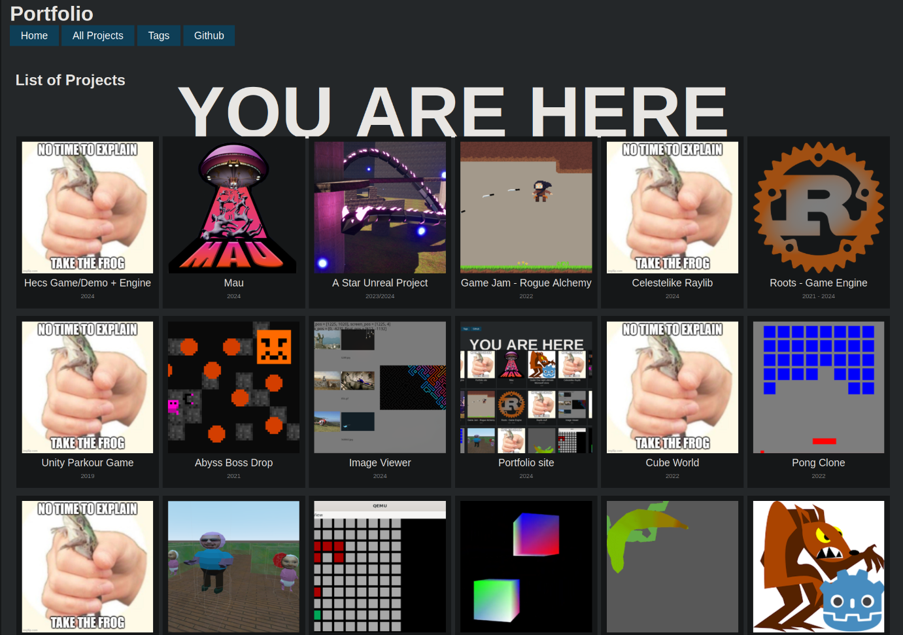

Portfolio
Portfolio site
2024
You are here already
This is a statically generated site using the zola static site engine.
I've used Zola once previously a few years ago and it is written in Rust so maybe I am a little biased but it does mean that if anything goes wrong, I have a higher chance of being able to fix it (and I also should have all of its dependencies and toolchains already if needed).
p.s. No Rust was written in the making of this project. Just Html, Css, and Markdown
While Zola does provide templates, I felt like I needed something more specific/tailored and so created this site from scratch.
Html and Css are not languages i've spent a lot of time with in the past and so this site is a little bit of a crash course in how you probably shouldn't design a website but I have done anyway. In the future I might include toggles for light themes and stuff but it's not really needed right now.
The bulk of the Html goes through the Tera template engine which is relatively easy to use but finding whether it has certain features or not and then implementing them was a little difficult sometimes.
projects_list.html
{% extends "base.html" %}
{% import "macros.html" as macros %}
{% block content %}
<div class="intro_block">
<h1 class="title">
{{ section.title }}
</h1>
</div>
<div class="tiles_block">
<div class="tile_area">
{% for page in section.pages %}
{% include "tile.html" %}
{% endfor %}
<div>
</div>
{% endblock content %}
tile.html
{% if page.extra.img %}
{% set image_path = page.path ~ page.extra.img %}
{% elif page.extra.img_static %}
{% set image_path = page.extra.img_static %}
{% else %}
{% set image_path = "default.png" %}
{% endif %}
{% set meta = get_image_metadata(path=image_path) %}
{% if meta.format != "gif" %}
{% set image = resize_image(path=image_path, width=250, height=250, op="fill") %}
{% set image_path = image.url %}
{% endif %}
<div class="tile">
<a href="{{ page.permalink | safe }}">
<figure>
<img width=200 height=200 src="{{ image_path }}" alt="{{ page.title }}"/>
<figcaption>{{ page.title }}</figcaption>
{% if page.extra.date %}
<figcaption class="date">{{ page.extra.date }}</figcaption>
{% endif %}
</figure>
</a>
</div>
Yes I did take multiple screenshots for this thumbnail (even if it's too small to notice on the projects page)
No thumbnail available
If you're confused by seeing this image around the site, it's the default image I've been using as placeholder until I can properly fill out a page.